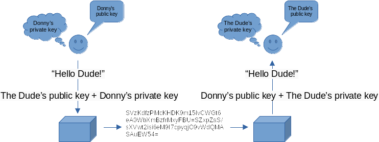

Assignment 4: Encrypting the Platform¶
Introduction¶
When working with 3rd party platforms, changes can occur that break backwards compatibility with the programs we create. An organization might decide to move in a new direction, fix a critical security flaw, or change system behavior. When these types of breaking changes occur, the systems and services that consume 3rd party platforms are responsible for updating their code to ensure future compatibility.
For the past two months, partnering organizations (e.g., ICS 32 students :) ) have been raising concerns over the poor security and privacy of the ICS 32 Distributed Social platform. In response to the concerns raised by its partners, the ICS32 Distributed Social organization has implemented a new authentication scheme. Rather than rely on a user name and password, users will now be required to supply an ed25519 public-key with each message. Additionally, all messages sent to the server must be encrypted with the DS server’s public key.
So for this assignment you will need to update your program to support the new authentication process for the DS server.
Summary of Program Requirements¶
Subclass the Profile class in your DS program to support encryption and public key authentication.
Read and understand documentation for a 3rd party library.
Update your DS program to communicate with the new DS Server.
Learning Goals¶
Use inheritance to extend class functionality
Install and use of 3rd party libraries
Solidify understanding of modules and classes in Python
Program Requirements¶
The ICS32 Distributed Social organization has decided to implement the NaCl networking and encryption library to help strengthen the security of its social messaging platform. Rather than implement the NaCl specification directly, the DS org will use a 3rd party library that is already written in Python called PyNaCl. The PyNaCl library supports the use of public key encryption using public and private keys. The following diagram depicts the basic process for using public and private keys to encrypt and decrypt data.

You can think of the role of public and private keys in public key encryption like a username and password. While it is safe to share a public key (username), you would never want to share a private key (password). When both public and private keys are combined, the public key encryption algorithm will use them to encrypt data into a format that can only be decrypted with the same public and private keys. This is the method you will use to add encryption to all posts entries and bio stored in your programs dsu file.
However, since we still want our messages to be readable from the DS website, we will also need to add support for encrypting our post information using a key that the DS server can use to decrypt messages. Fortunately, this process is nearly identical to what you will use for local encryption to your dsu file. The following diagram depicts the basic process for using public and private keys to share encrypted data.

Rather than encrypt a message using a public key that we create, we encrypt using the public key of the source where we want to share our message. This means that we need a way to exchange public keys with the DS server. To keep things as consistent as possible, the DS organization has modified the token key used by its protocol to store the public encryption keys exchanged between client programs and the server. But more on this change a little bit later.
Your final program will contain the following new modules:
NaClDSEncoder.py: A helper module provided for you, complete.
NaClProfile.py: A template class provided for you, incomplete.
a4.py: The main entry point to your program. You may continue to migrate your code from a2.py and a3.py or you start fresh. If you do start fresh, you will still need to make use of the code you have written to send messages to the DS server.
To prepare your ICS32 DS program for network communication using NaCl, there are a number of tasks you must complete. They have been divided into individual parts below to help you prioritize your program requirements.
Part 1¶
Installing the PyNaCl Package¶
The first thing you will need to do is install the PyNaCl package to your instance of Python:
pip install pynacl
If all goes well, you should see a message that is similar to “Successfully installed pynacl-1.4.0”. To verify that the package was installed, open up your Python shell and type:
>>> import nacl
>>>
If you receive any response other than a new line of input, it’s likely that pip installed the package to a different version of Python. Check your messages and make sure that you are testing the package in the same instance of the Python shell as where you installed the package.
Prepare your Environment¶
Thankfully, the DS org has released a module to abstract away some of the steps required to interact with their new encrypted platform. So the next thing you will want to do is download the module and test it.
ICS32 Distributed Social NaCl Encoder
A simple test is included in the following snippet, you are free to use it to validate that your environment is properly configured. You may also find the use of the NaClDSEncoder class in the test class a useful reference for your assignment code.
# NaClDSEncoder_test.py
# Simple test harness for the NaClDSEncoder class
#
# ICS 32
# Mark S. Baldwin
import unittest
from NaClDSEncoder import NaClDSEncoder
from nacl.public import PrivateKey, PublicKey, Box
class TestNaClDSEncoder(unittest.TestCase):
def test_generate(self):
# create an NaClDSEncoder object
nacl_enc = NaClDSEncoder()
# generate new keys
nacl_enc.generate()
# typically in a unittest printing this way is unnecessary
# including here for demonstration purposes...
# use print to display the keys, notice how the keypair is
# just the public and private keys combined.
print('\n')
print(f'keypair: {nacl_enc.keypair}')
print(f'public key: {nacl_enc.public_key}')
print(f'private key: {nacl_enc.private_key}')
self.assertEqual(len(nacl_enc.keypair), 88)
self.assertEqual(nacl_enc.public_key, nacl_enc.keypair[:44])
self.assertEqual(nacl_enc.private_key, nacl_enc.keypair[44:])
def test_encode_public(self):
# Use the NaClDSEncoder to create new keys
test_keys = NaClDSEncoder()
test_keys.generate()
# Test the NaClDSEncoder using the test_keys
nacl_enc = NaClDSEncoder()
pkey = nacl_enc.encode_public_key(test_keys.public_key)
self.assertEqual(type(pkey), PublicKey)
def test_encode_private(self):
# Use the NaClDSEncoder to create new keys
test_keys = NaClDSEncoder()
test_keys.generate()
# Test the NaClDSEncoder using the test_keys
nacl_enc = NaClDSEncoder()
prvkey = nacl_enc.encode_private_key(test_keys.private_key)
self.assertEqual(type(prvkey), PrivateKey)
if __name__ == '__main__':
unittest.main()
If you have everything set up properly, you should see some output that will look similar to the following (NOTE: your values will be different every time you run the generate() function!):
..
keypair: ziq0wkuDE0n0i+SFBtTEE1w9y/gG9C19NuAE8b8d/Qo=8ldBMVgC8QkOPl9nBKikIc+fLxUCuadqfAOXl90MoiA=
public key: ziq0wkuDE0n0i+SFBtTEE1w9y/gG9C19NuAE8b8d/Qo=
private key: 8ldBMVgC8QkOPl9nBKikIc+fLxUCuadqfAOXl90MoiA=
.
----------------------------------------------------------------------
Ran 3 tests in 0.001s
OK
Part 2¶
For part 2, you will need to write a new class to handle the new encryption policies required by the DS org. Since the DS server will now expect your program to authenticate with a public key and send posts that have been encrypted using the DS public key, you are going to need to rethink the way your current program works. Fortunately, the Profile module that you have been using in your DS program, is still quite useful. Therefore, the best course of action is probably to subclass the Profile class. To help you with this task, you will use the following skeleton to get started:
# TODO: Install the pynacl library so that the following modules are available
# to your program.
import nacl.utils
from nacl.public import PrivateKey, PublicKey, Box
# TODO: Import the Profile and Post classes
# TODO: Import the NaClDSEncoder module
# TODO: Subclass the Profile class
class NaClProfile:
def __init__(self):
"""
TODO: Complete the initializer method. Your initializer should create the follow three
public data attributes:
public_key:str
private_key:str
keypair:str
Whether you include them in your parameter list is up to you. Your decision will frame
how you expect your class to be used though, so think it through.
"""
pass
def generate_keypair(self) -> str:
"""
Generates a new public encryption key using NaClDSEncoder.
TODO: Complete the generate_keypair method.
This method should use the NaClDSEncoder module to generate a new keypair and populate
the public data attributes created in the initializer.
:return: str
"""
pass
def import_keypair(self, keypair: str):
"""
Imports an existing keypair. Useful when keeping encryption keys in a location other than the
dsu file created by this class.
TODO: Complete the import_keypair method.
This method should use the keypair parameter to populate the public data attributes created by
the initializer.
NOTE: you can determine how to split a keypair by comparing the associated data attributes generated
by the NaClDSEncoder
"""
pass
"""
TODO: Override the add_post method to encrypt post entries.
Before a post is added to the profile, it should be encrypted. Remember to take advantage of the
code that is already written in the parent class.
NOTE: To call the method you are overriding as it exists in the parent class, you can use the built-in super keyword:
super().add_post(...)
"""
"""
TODO: Override the get_posts method to decrypt post entries.
Since posts will be encrypted when the add_post method is used, you will need to ensure they are
decrypted before returning them to the calling code.
:return: Post
NOTE: To call the method you are overriding as it exists in the parent class you can use the built-in super keyword:
super().get_posts()
"""
"""
TODO: Override the load_profile method to add support for storing a keypair.
Since the DS Server is now making use of encryption keys rather than username/password attributes, you will
need to add support for storing a keypair in a dsu file. The best way to do this is to override the
load_profile module and add any new attributes you wish to support.
NOTE: The Profile class implementation of load_profile contains everything you need to complete this TODO. Just add
support for your new attributes.
"""
def encrypt_entry(self, entry:str, public_key:str) -> bytes:
"""
Used to encrypt messages using a 3rd party public key, such as the one that
the DS server provides.
TODO: Complete the encrypt_entry method.
NOTE: A good design approach might be to create private encrypt and decrypt methods that your add_post,
get_posts and this method can call.
:return: bytes
"""
pass
You can also download the code directly if you prefer.
Since we will be required to send encrypted messages to the new DS server, we might as well add support for local encryption as well to prevent unwanted parties from reading our journal entries. Therefore, in this class you will extend the Profile module to not only encrypt messages that will be sent to the DS server, but also messages stored in the .dsu file.
The comments in the skeleton code will provide you with some guidance on what you need to do. In addition to the incomplete methods, you will also need to override two methods from the Profile class. If done correctly, all of your new data attributes as well as your encrypted messages will be saved to the .dsu file passed to the save_profile method, without having to change anything else!
To learn how to encrypt and decrypt information using a keypair, you will need to consult the documentation for the module. The main page for the docs is a good place to start if you want to learn more about PyNaCl. However, since you are only required to implement a small portion of the overall PyNaCl module, you may find the examples on the Public Key Encryption page to be the most helpful. Feel free to discuss your findings on Zulip with your classmates.
Once your new Profile subclass has been completed, you can validate it by running the following program:
from Profile import Profile, Post
from NaClProfile_solution import NaClProfile
np = NaClProfile()
kp = np.generate_keypair()
print(np.public_key)
print(np.private_key)
print(np.keypair)
# Test encryption with 3rd party public key
ds_pubkey = "jIqYIh2EDibk84rTp0yJcghTPxMWjtrt5NW4yPZk3Cw="
ee = np.encrypt_entry("Encrypted Message for DS Server", ds_pubkey)
print(ee)
# Add a post to the profile and check that it is decrypted.
np.add_post(Post("Hello Salted World!"))
p_list = np.get_posts()
print(p_list[0].get_entry())
# Save the profile
np.save_profile(PATH/TO/DSU)
print("Open DSU file to check if message is encrypted.")
input("Press Enter to Continue")
# Create a new NaClProfile object and load the dsu file.
np2 = NaClProfile()
np2.load_profile(PATH/TO/DSU)
# Import the keys
np2.import_keypair(kp)
# Verify the post decrypts properly
p_list = np2.get_posts()
print(p_list[0].get_entry())
Just remember that once post entries have been encrypted with a keypair, they can only be decrypted with the same keypair!
Part 3¶
For the final part of this assignment, you will need to make sure your new authentication and encryption interface works with the udpated DS Server. There have been a few changes to the DS Server.
First, it is no longer running at the previous URL. A new URL will be provided via Slack. Second, you will receive a slightly revised response message:
# join as existing or new user
{"join": {"username": "ohhimark","password": "password123","token":"my_public_key"}}
You might recall from previous assignments, the token key was not used during join requests with the DS server. With the new public key encryption in place, you must now perform a join request using a public key that you have generated. The DS server will then use this public key to decrypt all of the messages that you send moving forward.
You will also need to slightly adjust the way in which you use the token value that you receive from the DS Server. Under the rules of the non-encrypted DS server you were required to send the token you received from the server in all of your messages. Now, rather than send back the server token, you will send your public key as the value of the token key.
Note
The token key in DS Protocol messages should be used to store the value of your public encryption key.
Finally, the only thing we are missing is a public key from the DS server. When you successfully join the server your response will now contain the public key used by the server to decrypt your messages:
{"response": {"type": "ok", "message": "", "token":"server_public_key"}}
So rather than return this response token to the server like you did in previous assignments, you will now need to store this value in your program somewhere and use it to encrypt your messages before sending. The encrypted_entry function that is part of the NaClProfile skeleton class is designed to support this requirement.
If you have implemented your NaClProfile class and modified your communication with the DS Server successfully, your program should continue to work as expected, just a little more secure.
Extra Credit¶
There is no extra credit for this assignment.
How we will grade your submission¶
To grade this assignment we will be evaluating the functionality of your NaClProfile class, modifications to your ds_client and ds_protocol classes to support encrypted messaging with the DS Server, and successful operation of your a4.py program.
This assignment will be graded on a 12-point scale, with the 12 points being allocated completely to whether or not you submitted something that meets all of the above requirements. The following rubric will be used:
- Requirements and Function | 9 pts
Does the program do what it is supposed to do?
Does the program make use of the required 3rd Party module?
Does the NaClProfile module function properly?
Are there any bugs or errors?
- Quality and Design | 3 pts
Is the code well designed?
Is the code clearly documented?
By now you should be clearly documenting your code and expending effort to ensure that your code design follows the conventions we have been discussing throughout the class. Therefore, we will continue increasing the strictness of our stance on quality and design than we have in previous assignments.